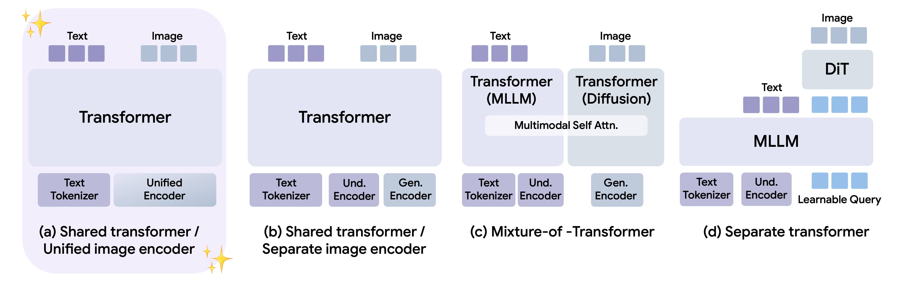
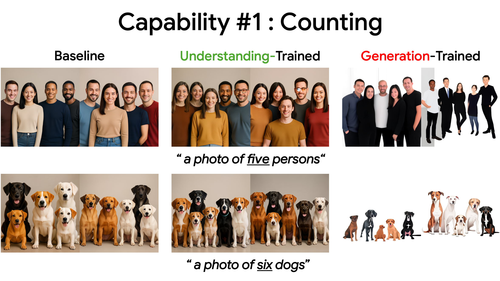
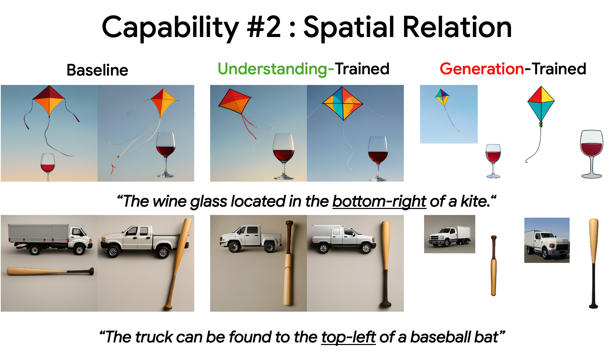
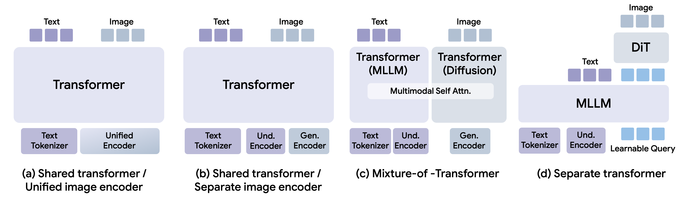
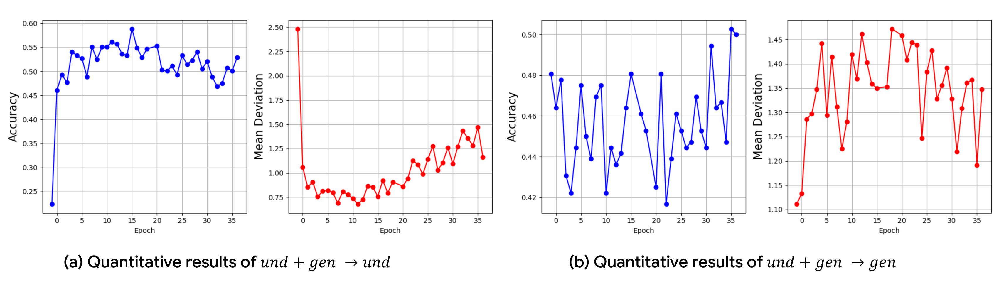

Transferability Between Understanding & Generation
in Unified Multimodal Models
1KAIST AI ·
2Blynx ·
3Trillionlabs
*Equal contribution · †Co-corresponding author
ECCV 2026
Prior UMM studies generally report that scaling up image understanding training benefits generation benchmarks — and vice versa. But an aggregate benchmark score does not tell us whether a specific capability — like counting — is actually shared between the two. So we probe it directly: we train a capability on just one task (understanding or generation) and test whether it improves on the other task, without ever training it there. We call this transferability.
In a UMM, if we sharpen a specific capability — say counting — on the understanding task alone, does that capability improve in generation too? And does it work in reverse?
Transfer depends on architecture. It emerges most clearly in models with a shared transformer and a unified visual encoder (Lumina-DiMOO, MMaDA), and weakens as the architecture becomes more decoupled.
And it’s useful. Training the understanding task lets the capability transfer into generation — improving the target capability while preserving image quality (far less distribution shift than fine-tuning generation directly).



Counting. The prompt asks for a specific number of objects. The original model miscounts (left). Training counting through understanding and letting it transfer to image generation fixes the count and keeps the photo natural (middle, Understanding). Training the generation directly also fixes the count, but the image visibly degrades — stiff, cut-out subjects — due to distribution shift towards the fine-tuning dataset. (right, Generation).
Spatial relation. The prompt places one object relative to another (e.g., the wine glass at the bottom-right of the kite). The baseline often gets the arrangement wrong (left). Training spatial relation through understanding corrects the layout while keeping a original generative distribution (middle, Understanding); training generation directly also corrects the layout but exhibits degraded visual quality due to distribution shift towards the fine-tuning dataset. (right, Generation).
Architecture Analysis : In which UMM architecture does transfer emerge?
#1
We empirically observe that transfer appears most clearly in architecture (a) — a shared backbone with a unified encoder — while other decoupled designs show little or no transfer. This may suggest that sharing trasnformer backbone & input image representations helps capabilities transfer between tasks.
UMM Architecture families

We select open-source model from each architecture family and evaluate their transferability. We consider two transfer directions. (1) und→gen : Train on understanding, test on generation. (2) gen→und : Train on generation, test on understanding.
Capability #1: Counting
| Eval | Train→Test | (a) Shared + Unified Encoder | (b) Separate Enc. | (c) MoT | (d) Separate Tr. | ||||||
|---|---|---|---|---|---|---|---|---|---|---|---|
| Lumina-DiMOO | MMaDA | Janus-Pro | BAGEL | BLIP3-o | |||||||
| Acc (%) ↑ | MAD ↓ | Acc (%) ↑ | MAD ↓ | Acc (%) ↑ | MAD ↓ | Acc (%) ↑ | MAD ↓ | Acc (%) ↑ | MAD ↓ | ||
| Generation | Baseline | 48.0 | 1.11 | 15.8 | 3.44 | 38.0 | 1.46 | 42.0 | 1.16 | 31.0 | 2.08 |
| und→gen | 57.0 +9.0 | 0.83 −0.28 | 20.0 +4.2 | 3.23 −0.21 | 32.0 −6.0 | 1.55 +0.09 | 47.0 +5.0 | 1.11 −0.05 | 37.0 +6.0 | 1.80 −0.28 | |
| Understanding | Baseline | 22.0 | 2.48 | 38.7 | 1.16 | 37.0 | 2.70 | 63.0 | 0.65 | 63.0 | 0.54 |
| gen→und | 30.0 +8.0 | 1.88 −0.60 | 43.9 +5.2 | 1.07 −0.09 | 38.0 +1.0 | 3.34 +0.64 | 64.0 +1.0 | 0.62 −0.03 | 62.0 −1.0 | 0.56 +0.02 | |
· MAD : Mean Average Deviation between predicted and ground-truth counts. Lower is better.
Capability #2: Spatial Relation
| Eval | Train→Test | (a) Shared + Unified Encoder | |
|---|---|---|---|
| Lumina-DiMOO Acc (%) ↑ | MMaDA Acc (%) ↑ | ||
| Generation | Baseline | 67.0 | 33.0 |
| und→gen | 74.0 +7.0 | 46.3 +13.3 | |
| Understanding | Baseline | 61.0 | 40.8 |
| gen→und | 67.0 +6.0 | 48.8 +8.0 | |
Across both capabilities, (a) Models with a shared transformer and a unified visual encoder (Lumina-DiMOO & MMaDA) show improvements in both directions, exhibiting stronger bidirectional transfer. In contrast, (b)—(d) show weaker or no transfer.
Can we add a generative capability without hurting image quality?
Want to boost a generative capability? Fine-tuning generation directly pulls the model toward the training set — a distribution shift that can degrade image quality.
Train understanding, not generation. In our experiments this improves the target generative capability while keeping the distribution — and image quality — closer to the original.
#2
und→gen (Transfer) can improve target generative capabilities while keeping image quality closer to the baseline (lower FID). Direct training achieves better accuracy, but image distribution drifts much higher from the baseline (higher FID).
Transfer vs. Direct Training (Counting & Spatial Relation)
| Capability | Train→Test | Task metric | Image quality | ||
|---|---|---|---|---|---|
| Acc (%) ↑ | MAD ↓ | IS ↑ | FID ↓ | ||
| Counting | Baseline | 48.0 | 1.11 | 16.86 | — |
| und→gen (Transfer) | 57.0 +9.0 | 0.83 −0.28 | 17.55 | 31.47 | |
| gen→gen (Direct) | 57.0 +9.0 | 0.91 −0.20 | 15.29 | 52.51 | |
| Spatial Relation | Baseline | 67.0 | — | 16.86 | — |
| und→gen (Transfer) | 74.0 +7.0 | — | 17.50 | 30.95 | |
| gen→gen (Direct) | 80.0 +13.0 | — | 17.41 | 32.28 | |
· To measure distribution shift from baseline, FID is computed between baseline-generated images. Lower FID indicates lower distribution shift.
For Counting, Transfer (und→gen) achieves same 57% accuracy compared to direct training (gen→gen), but with much lower FID (31.5 vs. 52.5). For Spatial Relation, transfer trails direct training on accuracy (+7 vs. +13 pp) but keeps lower FID (30.95 vs. 32.28).
Is und→gen always the stronger direction?
We measure transfer strength as the improvement from transfer relative to direct training — e.g., 150% means transfer achieved 1.5× the improvement of direct training.
#3
Not always. In our Lumina-DiMOO experiments, und→gen tends to be stronger for counting and spatial relation, while gen→und tends to be stronger for text capability. We hypothesize that this difference arises because text depends on fine-grained, pixel-level detail — and generative supervision captures this detail more directly than understanding supervision does.
| Train→Test | Counting | Spatial Relation | Text Recog./Gen. | |||
|---|---|---|---|---|---|---|
| Acc (%) ↑ | MAD ↓ | Acc (%) ↑ | WER ↓ | METEOR ↑ | F1 ↑ | |
| und → gen | 100% | 140% | 53.8% | 100% | 5.4% | 7.6% |
| gen → und | 22.9% | 37.7% | 21.4% | 28.9% | 27.6% | 25.9% |
Transfer strength = Δ(transfer) / Δ(direct training). Bold = dominant direction per metric.
Does existence of transferability guarantee simultaneous gains on joint training?
#4
Not necessarily. When we trained und+gen together, the two did not improve at the same time — understanding rose while generation fell, then the trend reversed. This suggests that a transfer path existing doesn’t guarantee gains in both directions at once.

BibTeX
@inproceedings{kang2026transferability,
title = {Transferability Between Understanding and Generation in Unified Multimodal Models},
author = {Kang, Jiwon and Yoon, Heeji and Jung, Jaewoo and Min, Jaewon and
Jeon, Minkyeong and Hwang, Biyeon and Jung, Sangwon and Kim, Seungryong},
booktitle = {European Conference on Computer Vision (ECCV)},
year = {2026}
}